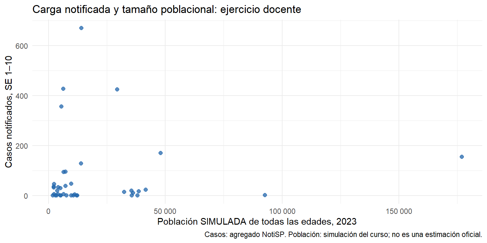

Práctica 2: ¿está preparada nuestra base para responder al director regional?
Sesión 2 · Taller
Autor/a
Oswaldo Espinoza Hurtado
Pregunta
En la S1 discutimos si los datos de dengue de Piura justificaban una alerta. Ahora el director regional pide precisar la recomendación. Para comparar territorios y decidir qué información falta, el equipo necesita examinar las fuentes y preparar una integración que pueda defender.
¿Qué le podemos decir al director con estos datos y qué nos falta comprobar para recomendar dónde y cómo actuar?
El ejercicio principal usa los casos con inicio de síntomas en las SE 1–10 de 2023. Seguimos trabajando con una extracción consolidada: seleccionar ese periodo no reconstruye la información que estaba disponible al terminar la SE 10.
Objetivos
Al terminar la práctica podrán:
Describir qué representa una fila e identificar las claves del agregado.
Revisar valores faltantes, consistencia y ausencias sin confundirlas con cero casos.
Integrar casos y población sin multiplicar el numerador.
Construir un indicador docente con un denominador compatible y declarar los supuestos pendientes.
Documentar las fuentes y los problemas concretos de su proyecto.
Datos
Archivo
Unidad de observación
Uso
datos/procesados/dengue_piura_semanal.csv
Distrito × año × semana × clasificación × diagnóstico
Notificaciones agregadas de dengue
datos/referencia/ubigeos.csv
Distrito del marco del curso
Correspondencia de códigos y nombres
datos/simulados/poblacion_simulada.csv
Distrito × año × grupo de edad
Practicar la construcción del denominador
AdvertenciaEl denominador es simulado
La población no corresponde a cifras oficiales. Los indicadores que la usan sirven para practicar y no deben emplearse para recomendar intervenciones reales ni presentarse como tasas oficiales. Además, hay que confirmar si el ubigeo del agregado corresponde a residencia, notificación o atención antes de usar una población residente como denominador.
NotaCómo seguir la práctica
Descarguen la versión actual del repositorio del curso, descompriman la carpeta y abran inteligencia-sanitaria.Rproj. Los datos ya están incluidos. El ejercicio principal no necesita conexión después de la descarga.
Pueden ejecutar los bloques en un documento Quarto nuevo o trabajar sobre esta práctica. El primer bloque contempla las rutas desde la raíz del proyecto y desde la carpeta de la sesión. Usamos el mismo código visible para ejecutar y renderizar.
Tiempo sugerido: pasos 1–2, 20 min; paso 3, 25 min; pausa, 10 min; pasos 4–5, 30 min; paso 6 y puesta en común, 35 min. El complemento de clima queda como ampliación.
1. Leer y reconocer las fuentes
# Mantener tildes y símbolos en las figuras y tablas de R para Windows.if (.Platform$OS.type =="windows") {invisible(Sys.setlocale("LC_CTYPE", ".UTF-8"))}library(readr)library(dplyr)library(tidyr)library(ggplot2)# Consola del proyecto: datos/. Documento dentro de la sesión: ../../datos/.dir_datos <-if (dir.exists("datos")) "datos"elsefile.path("..", "..", "datos")# Los códigos se leen como texto para conservar los ceros iniciales.dengue <-read_csv(file.path(dir_datos, "procesados", "dengue_piura_semanal.csv"),col_types =cols(ubigeo =col_character()), show_col_types =FALSE)ubigeos <-read_csv(file.path(dir_datos, "referencia", "ubigeos.csv"),col_types =cols(.default =col_character()), show_col_types =FALSE)poblacion <-read_csv(file.path(dir_datos, "simulados", "poblacion_simulada.csv"),col_types =cols(ubigeo =col_character()), show_col_types =FALSE)ano_corte <-2023Lsemana_corte <-10Lcorte <- dengue |>filter(ano == ano_corte, semana <= semana_corte)glimpse(corte)
Como control, el corte contiene 275 filas, 2953 casos y 39 distritos con casos. En esta extracción, todos los casos seleccionados figuran como confirmados. Eso no establece cuál era su clasificación al terminar la SE 10 de 2023.
Pregunta 1. ¿Qué representa una fila en cada uno de los tres archivos? ¿Qué información necesitarían para saber cuántos casos estaban notificados y confirmados al terminar aquella semana?
Respuesta:
2. Comprobar estructura y consistencia
Llamamos clave candidata a una combinación que debería identificar una sola fila. En este archivo no basta con distrito y semana: también están el año, la clasificación clínica y el tipo de diagnóstico.
claves_repetidas <- dengue |>count(ano, semana, ubigeo, clasificacion, tipo_dx, name ="filas") |>filter(filas >1)controles <-tibble(comprobacion =c("Celdas con NA", "Ubigeos ausentes o sin seis dígitos","Casos ausentes, negativos o no enteros","Semanas ausentes o fuera de 1–53","Claves repetidas"),hallazgos =c(sum(is.na(dengue)),sum(is.na(dengue$ubigeo) |!grepl("^[0-9]{6}$", dengue$ubigeo)),sum(is.na(dengue$casos) | dengue$casos <0| dengue$casos !=floor(dengue$casos)),sum(is.na(dengue$semana) |!dengue$semana %in%1:53),nrow(claves_repetidas) ))controles
El control de semanas solo revisa un rango posible. Para validar una semana en un año concreto hay que contrastarla con el calendario epidemiológico de la fuente.
Revisemos también las categorías, ponderando por casos:
En un agregado, una fila con un problema puede representar varios casos. Conviene informar ambas magnitudes cuando se cuantifique el efecto de un hallazgo.
Pregunta 2. Todos los controles dan cero y un compañero concluye: «Entonces ya están todos los casos». ¿Qué le responderían? ¿Qué información necesitarían para revisar reportes pendientes, casos no detectados o personas notificadas más de una vez?
Respuesta:
La completitud de los campos indica qué quedó sin llenar; la de los reportes compara lo recibido con lo esperado. Estudiar qué proporción de los casos ocurridos fue detectada corresponde a la sensibilidad de la vigilancia y requiere información adicional. Los controles del archivo no responden por sí solos esas tres preguntas.
3. Examinar el tiempo y los territorios sin filas
Un intervalo explícito
La base completa llega hasta la SE 35 de 2026. Ese dato describe su extensión, pero no permite conocer por sí solo la completitud de cada territorio. En el ejercicio definimos el intervalo 2023, SE 1–10, antes de buscar ausencias.
Aquí todas las semanas seleccionadas tienen casos agregados, pero eso no prueba que todos los establecimientos hayan reportado. El código tampoco crea semanas posteriores al corte.
Para periodos que crucen años, se necesita un calendario con año y semana, incluyendo la SE 53 solo donde corresponda. No se elimina ni se reasigna esa semana sin documentar la decisión. Consulten el calendario epidemiológico 2023 del CDC Perú como ejemplo de la fuente que debe acompañar los datos.
anti_join() conserva las filas de la primera tabla que no encuentra en la segunda. En 26 distritos de esta lista no aparecen registros para esas diez semanas. Todavía no hemos decidido si corresponde asignarles cero.
NotaEl supuesto que permite completar ceros
Si la documentación de la fuente garantiza que el extracto incluye todas las notificaciones del ámbito y periodo y que las combinaciones sin casos se omiten, esas ausencias se pueden representar como ceros notificados. La cobertura del reporte y la subnotificación siguen siendo preguntas distintas.
Si desconocemos qué reportes llegaron o qué territorios cubre la extracción, conservamos la ausencia por verificar. En este paso no imputamos ceros.
Pregunta 3. Un compañero propone poner cero en los 26 distritos y otro propone dejarlos pendientes. ¿Qué le preguntarían a quien preparó la base para decidir? ¿Qué diferencia hay entre no tener notificaciones y no tener enfermedad?
Respuesta:
Ejercicio. Escriban una regla para completar un panel distrito × semana: qué territorio y periodo usarían, qué ausencias convertirían en cero y qué evidencia exigirían. No es necesario programarla todavía.
Regla y justificación:
El marco del curso se obtuvo de metaxénicas y es incompleto a escala nacional. Para otro evento o departamento hay que comprobar qué territorios quedan fuera antes de utilizarlo como universo esperado.
4. Integrar población sin multiplicar casos
Detectar el problema
Tenemos una fila de casos por distrito y año para el periodo seleccionado. La población todavía tiene cinco grupos de edad por distrito y año.
# Demostración deliberada: esta tabla NO se usará para el indicador.union_por_edades <- casos_distrito |>left_join(poblacion, by =c("ubigeo", "ano"))tibble(paso =c("Antes de unir", "Después de unir sin sumar edades"),filas =c(nrow(casos_distrito), nrow(union_por_edades)),suma_casos =c(sum(casos_distrito$casos), sum(union_por_edades$casos)))
La suma pasa de 2953 a 14 765. Cada distrito encontró cinco filas de población, por lo que el numerador se repitió cinco veces.
Pregunta 4. Un compañero propone quedarse con una sola fila de población por distrito y año usando distinct(ubigeo, ano, .keep_all = TRUE). ¿Qué población conservaría y qué información perdería? ¿Cómo prepararían la tabla para el indicador de todas las edades?
Respuesta:
Preparar el denominador y comprobar correspondencias
Para un ejercicio de todas las edades, sumamos los cinco grupos. Si la pregunta fuera sobre menores de un año, haría falta también un numerador con ese grupo de edad; el CSV de dengue no lo contiene.
relationship = "many-to-one" exige que cada fila de casos encuentre como máximo una fila de población. La ausencia de correspondencia se revisa por separado: una unión izquierda la conserva con población faltante.
# El cálculo siguiente debe detenerse si estos controles fallan.stopifnot(anyDuplicated(poblacion[c("ubigeo", "ano", "grupo_edad")]) ==0L,anyDuplicated(base_integrada[c("ubigeo", "ano")]) ==0L,nrow(base_integrada) ==nrow(casos_distrito),sum(base_integrada$casos) ==sum(corte$casos),nrow(sin_poblacion) ==0L,all(is.finite(base_integrada$poblacion_simulada)),all(base_integrada$poblacion_simulada >0))
Si no aparece salida, se cumplieron estas condiciones. Son controles de la integración; no certifican que la población simulada sea verdadera o que el numerador esté ubicado por residencia.
5. Construir e interpretar un indicador docente
El siguiente cálculo supone, para practicar, que ambos archivos se refieren a una población geográfica compatible. Ese supuesto requiere confirmación antes de cualquier uso real.
indicadores <- base_integrada |>left_join(marco_piura, by ="ubigeo", relationship ="many-to-one") |>mutate(casos_por_100mil_sim =100000* casos / poblacion_simulada) |>select(ubigeo, distrito, ano, casos, poblacion_simulada, casos_por_100mil_sim) |>arrange(ubigeo)indicadores
Nombre completo: casos notificados acumulados en SE 1–10 de 2023 por 100 000 habitantes, calculados con población simulada. La tabla contiene distritos con casos en el extracto; no representa un panel completo de todos los distritos de Piura.
ggplot(indicadores, aes(poblacion_simulada, casos)) +geom_point(colour ="#2166ac", size =2, alpha =0.75) +scale_x_continuous(labels = scales::label_number(big.mark =" ")) +labs(x ="Población SIMULADA de todas las edades, 2023",y ="Casos notificados, SE 1–10",title ="Carga notificada y tamaño poblacional: ejercicio docente",caption ="Casos: agregado NotiSP. Población: simulación del curso; no es una estimación oficial.") +theme_minimal()

Pregunta 5. El director pregunta: «¿Esta tabla ya me dice dónde mandar las brigadas?». Expliquen qué aporta el conteo, qué aporta el indicador poblacional y qué más necesitan saber antes de recomendar una intervención.
Respuesta:
No anualizamos el indicador de diez semanas. Tampoco lo usamos para ordenar intervenciones reales: además del denominador simulado, faltan la verificación geográfica y fuentes sobre tendencia, intervenciones y capacidad de respuesta.
6. Volver a la pregunta del equipo
Completen esta ficha para su evento y departamento. Si todavía no tienen acceso a una fuente, registren quién la solicitará y cómo afectaría su ausencia a la pregunta.
Fuente necesaria
Disponible o pendiente
Unidad y periodo
Variable clave
Limitación y cómo abordarla
Vigilancia
Denominador
Fuente adicional que podría cambiar la decisión
Comprueben especialmente:
Dengue: ubicación del caso, periodo comparable y registro de intervenciones si la pregunta lo requiere.
Tos ferina: edad disponible y correspondencia con la población del grupo elegido.
Sarampión: clasificación de casos, cobertura territorial y alcance de los datos de vacunación. Una cobertura administrativa aislada no describe por sí sola todos los susceptibles.
Registren al menos dos decisiones en una bitácora:
Decisión
Qué alternativa consideramos
Por qué
Qué interpretación permite o restringe
Periodo y versión de los datos
Tratamiento de ausencias o integración de fuentes
Pregunta 6. Con las fuentes que tienen, ¿hasta dónde pueden responder la pregunta del equipo? Si falta un dato esencial, expliquen a quién lo pedirán o cómo cambiarían el lugar, el periodo o la pregunta para poder avanzar.
Respuesta:
Antes de cerrar: ¿qué harían ustedes?
Tomen tres minutos del cierre del taller para responder individualmente, sin ejecutar código ni consultar las respuestas de otros compañeros. La actividad es sin nota; sirve para ver qué quedó claro y qué necesitamos retomar.
1. Distinguir las ausencias. Los datos disponibles llegan hasta la SE 10. En cada situación indiquen si corresponde cero, información pendiente o fuera del periodo observado, y expliquen por qué.
Situación
Tratamiento y razón
Reporte completo que declara ningún caso en SE 9
Un establecimiento no entregó su reporte de SE 9
Queremos añadir la SE 11
2. Anticipar una unión. Cada fila de casos encuentra cuatro filas en otra tabla. ¿Qué ocurriría al sumar los casos después de unir? ¿Qué revisarían para obtener una tabla adecuada a su pregunta?
Respuesta:
3. Volver a la decisión. Para el proyecto de su equipo, escriban algo que pueden afirmar hoy y un dato que pedirían. Expliquen qué podría cambiar en la decisión cuando consigan ese dato.
Respuesta:
Renderizar y compartir
Pulsen Render (o Ctrl + Shift + K). El HTML debe contener sus respuestas, controles e interpretación, además del código y sus resultados.
Para la puesta en común, completen:
Con estos datos podemos sostener ____. Todavía necesitamos verificar ____, porque podría cambiar ____. Mientras se verifica, proponemos ____, considerando ____.
La entrega oficial de S2 sigue siendo un párrafo con evento, departamento y pregunta. La ficha y la bitácora alimentan el Avance 1; esta práctica no agrega una evaluación independiente.
Limitaciones que deben acompañar el resultado
Trabajamos con un agregado consolidado; no reconstruimos el conocimiento disponible al terminar la SE 10 de 2023.
El archivo no incluye edad, establecimiento, fechas de notificación ni identificadores individuales. Varias comprobaciones requieren otras fuentes.
La cobertura de reportes no se deduce de la ausencia de celdas vacías o de filas de casos.
El marco territorial distribuido es incompleto a escala nacional.
La ubicación representada por el ubigeo debe confirmarse con el responsable de la extracción.
La población es simulada. Los valores calculados con ella son docentes y no sustentan decisiones reales.
Complemento: comprobar una unión con clima
Esta ampliación puede revisarse después del taller. Practicamos la correspondencia de claves; el modelado con predictores y rezagos se desarrollará en S5.
El clima semanal del curso es simulado. Su coincidencia con los casos no permite inferir una asociación real ni atribuir el aumento del dengue a esas cifras climáticas.
Esta tabla conserva las combinaciones distrito × semana con casos; no imputa las ausentes. Al reemplazar el clima por una fuente observada, hay que comprobar unidades, resolución geográfica y definición temporal, además de estas claves.